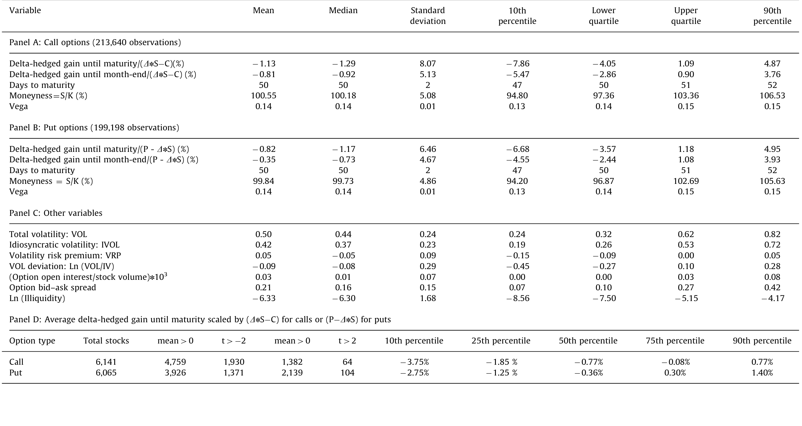
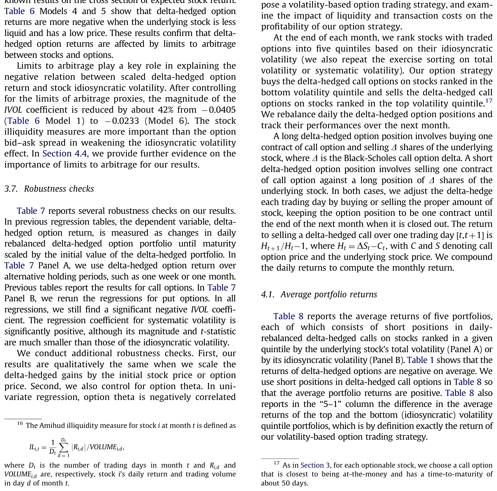
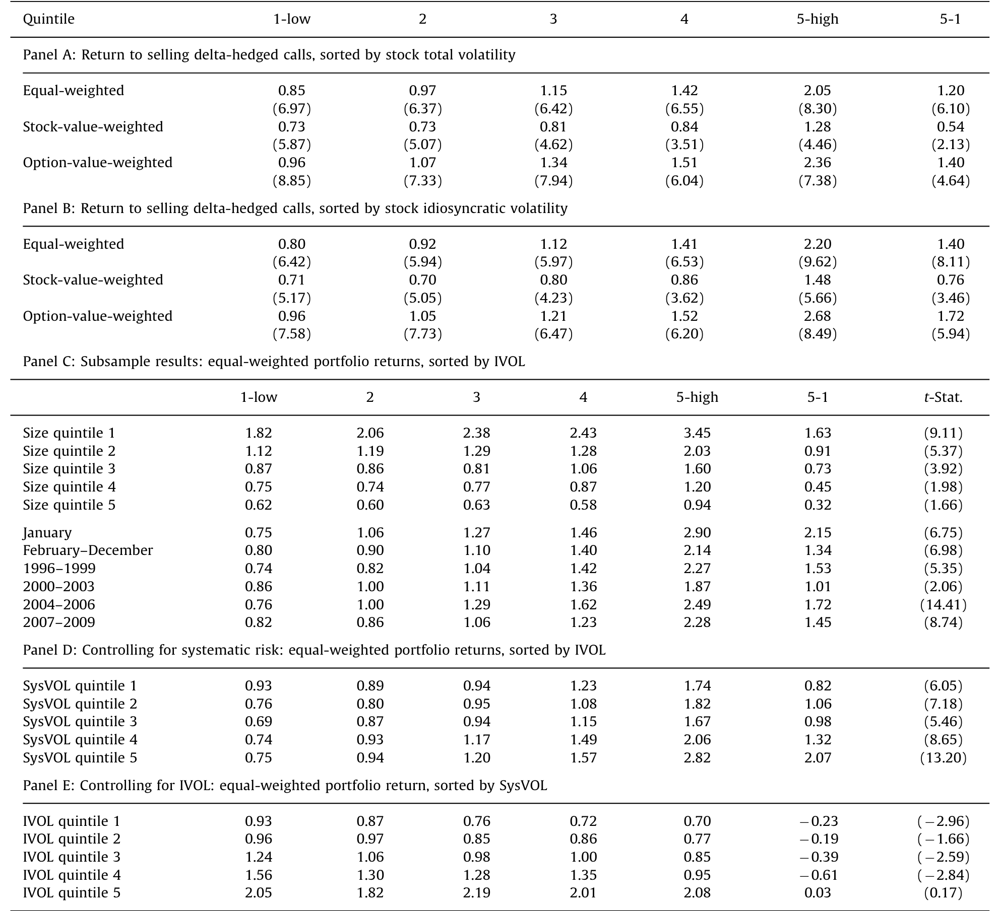
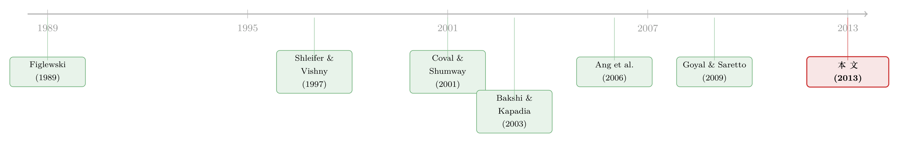

波动越「自己的」，期权越不值钱——一条藏在 delta 对冲收益里的暗线
本文读的是 Cao & Han (2013, Journal of Financial Economics)：把个股期权的 delta 对冲收益 (delta-hedged option return) 在横截面上排排坐，会发现它随标的股票的特质波动率 (idiosyncratic volatility, IVOL) 单调递减——IVOL 越高，对冲掉方向风险之后的期权越亏钱。这既不是风险溢价，也不是「波动率定价错误」，而是受约束的做市商对那些「最难对冲」的期权收取了更高的保费。
1 一个被当作「废话」的市场
先说一句几乎所有人都会点头、却很少有人较真的话：期权不过是股票的杠杆头寸。
既然 Black-Scholes 告诉我们，期权可以用标的股票加无风险债券完美复制，那它的价格就完全由标的决定，期权本身没有任何「自己的」信息可言。顺着这个逻辑，几十年来学术界研究期权，几乎只研究一件事——相对于标的的无套利定价。至于「期权的预期收益由什么决定」，这个在股票市场被研究了千百遍的问题，在期权市场反而是一片荒地。
但现实里这套「完美复制」从来没真正成立过。Figlewski (1989) 早就指出，市场不完美时套利只能把期权价格框进一个很宽的区间，而不是钉在某一个点上。于是一个自然的问题冒出来了：既然无套利只给了一条宽得能开卡车的边界，那么在这条边界之内，到底是什么把期权价格推来推去？
Cao 和 Han 的答案，藏在一个你可能从没想过要去看的地方：标的股票特质波动的大小。
2 先把「方向」对冲掉
要谈期权「自己的」收益，第一步是把它身上那层股票的影子剥干净。
作者用的工具叫 delta 对冲收益 (delta-hedged gain)，方法直接搬自 Bakshi & Kapadia (2003)：买一份看涨期权，同时用标的股票做空头对冲，使整个组合对股价的小幅波动不敏感，净投资部分按无风险利率计息。每天重新调一次对冲比例 (rebalance)。这样剥离之后，剩下的收益就不再受股票涨跌驱动，而是期权相对于复制组合多赚或多亏的那一块。
具体地，对一份在 \([t,t+\tau]\) 内离散对冲 \(N\) 次的看涨期权，其 delta 对冲收益是：
这里 \(\Delta_{C,t_n}\) 是 \(t_n\) 时刻看涨期权的 delta，\(r_{t_n}\) 是年化无风险利率。由于期权价格关于股价是一次齐次的，\(\Pi(t,t+\tau)\) 正比于初始股价；为了让不同价位的股票之间可比，作者把它除以所投入证券的绝对值 \((\Delta_t S_t - C_t)\)，得到标准化的 delta 对冲期权收益 \(\Pi(t,t+\tau)/(\Delta_t S_t - C_t)\)。看跌期权的定义完全对称，只把价格与 delta 换成看跌的版本。
为什么是 delta 对冲、而不是裸买期权？因为裸期权的收益主要被股价方向淹没，你看到的全是「股票的故事」。对冲掉方向之后，剩下的才是期权对波动率的暴露——而这恰恰是作者想盯住的东西。
3 第一个事实：对冲完，还是亏
把这个对冲组合在 1996 年 1 月到 2009 年 10 月的样本上跑一遍，第一个结果就有点反直觉：delta 对冲之后，期权平均还是亏钱的。
数据来自 OptionMetrics 的 IvyDB、股票端的 CRSP、账面价值的 Compustat，以及 French 数据库的因子。每月底，作者在每只可期权化的股票上挑一对最接近平价 (at-the-money)、到期日约一个半月的看涨与看跌期权——平价期权对波动率最敏感。层层过滤后，最终样本约 21 万个 delta 对冲收益，覆盖约 6000 只标的股票，平均每月有 1,514 只股票上榜。
平均来看（如表 1）：看涨期权持有到下月末的标准化对冲收益是 −0.81%，持有到期则为 −1.13%；中位数分别是 −0.92% 与 −1.29%。看跌端同样为负，中位数 −0.73%（到下月末）与 −1.17%（到期）。表 1 的 Panel D 进一步做了逐股的时间序列 t 检验：6,141 只有看涨期权的股票里，约 78% 平均对冲收益为负，约 32% 显著为负，而显著为正的只有约 1%。

Table 1: shows large variations in the delta-hedged
这块「系统性的负收益」本身并不新鲜——它就是 Bakshi & Kapadia (2003) 说的负的市场波动率风险溢价：delta 对冲组合正向暴露于波动率，承担了波动率风险，所以平均要付出代价。但作者真正要问的，不是这块收益平均有多负，而是它在横截面上为什么有人更负。
4 真正关键的一步：把波动拆成两半
接着，一个自然的问题是：既然对冲组合赚的是波动率的钱，那它的收益是不是就跟标的的总波动挂钩？
先验证一下。用月度 Fama-MacBeth 回归，把标准化对冲收益对总波动率 VOL（上月日收益的标准差）回归，系数是 −0.0299，t 值 −8.72——波动越大，对冲期权越亏。看上去顺理成章。
但真正关键的一步在于：作者把总波动拆成了两块。沿用 Ang, Hodrick, Xing & Zhang (2006) 的口径，特质波动率 IVOL 是 Fama-French 三因子模型残差的标准差；系统性波动率 SysVOL 则是 \(\sqrt{VOL^2 - IVOL^2}\)。把两者同时放进回归，反转出现了：
$$\text{IVOL coef.} = -0.0405\ (t=-15.46), \qquad \text{SysVOL coef.} = +0.0160\ (t=3.79)$$
两者符号相反。 特质波动越高，对冲期权越亏；系统性波动越高，对冲期权反而越赚。换句话说，前面那条「总波动越高越亏」的关系，几乎全是特质波动那一半在拉动；系统性那一半的作用恰恰相反。
这件事的经济意义也不小。基于 −0.0405 的系数与表 1 的分布，IVOL 上升 1 个标准差，看涨对冲收益平均下降 0.93%；从 IVOL 排序的第 10 个百分位移到第 90 个，对冲收益要掉 2.14%；从 25 移到 75 也要掉 1.09%。一个月一两个点，对一个已经对冲掉方向风险的头寸来说，是很大的数。
这就是全文的「核心」：delta 对冲期权收益随标的特质波动率单调递减，且与系统性波动率方向相反。 后面所有的篇幅，都是在反复盘问——这条关系到底是不是真的，是不是别的东西伪装出来的。
5 反复盘问：它不是风险，也不是定价错误
一个聪明的怀疑者此刻会抛出三种「平替解释」，作者逐一拆掉。
会不会是波动率风险溢价？ 股票波动是时变的，对冲组合正向暴露于波动率变化，平均收益里本就嵌着一块波动率风险溢价。但作者在 Fama-MacBeth 回归里直接控制了波动率风险溢价 (VRP)，IVOL 系数依旧显著为负；再把策略收益对一堆市场波动风险、共同特质波动风险的代理做时序回归，在 Fama-French 三因子加动量之外，策略仍有约 1.32%/月 的显著正 alpha。风险溢价解释不了。
会不会是投资者对波动变化的过度反应？ 高当前波动的股票，可能刚刚经历了波动飙升，若投资者像 Stein (1989)、Poteshman (2001) 说的那样对波动变化反应过度、把这些期权买贵了，也能造出这个结果。但作者控制了近期波动变化之后，负向关系依旧。
会不会是 Goyal-Saretto 那种「隐含波动率偏离历史波动率」的定价错误？ Goyal & Saretto (2009) 发现，历史波动率大幅高于隐含波动率的期权后续收益更高。作者证实了这个效应存在；但控制了「历史—隐含波动率之差」之后，IVOL 与对冲收益的负向关系不但没消失，反而更强了。也就是说，这块定价错误非但解释不了结果，还在「对冲」掉它之后让结果更显眼。
（顺带一提，这条「特质波动率与期权」的暗线，和股票市场那个著名的「特质波动率之谜」并不是一回事——后者讲的是高 IVOL 股票的股票收益低，可参见《「波动率之谜」其实是一道预测题》。本文盯的是对冲掉股票之后的期权收益。）
6 于是落到那个真正的机制：做市商的难处
排除掉风险与错误定价，剩下的解释才是作者真正想讲的：市场不完美 + 受约束的金融中介。
它的逻辑沿着 Bollen & Whaley (2004) 和 Garleanu, Pedersen & Poteshman (2009) 的「需求驱动的期权定价 (demand-based option pricing)」展开。一边，高特质波动股票的期权对投机者很有吸引力，需求旺盛；另一边，这类期权特别难对冲——特质波动恰恰是套利成本最重要的代理（Shleifer & Vishny, 1997；Pontiff, 2006），它意味着更高的交易成本和更大的持仓风险。做市商承接这些「烫手」的期权，自然要收一笔额外的保费。保费越高，买方的事后收益就越低。于是：特质波动越高 → 期权越贵 → delta 对冲收益越负。
这套机制留下了几个可检验的「指纹」，作者一一对上了：
- 当标的或期权流动性更差、期权未平仓量 (open interest) 更高时，平均对冲收益更负——这正是做市商在「难对冲、需求高」时多收钱的样子。
- 控制了一组套利成本 (limits to arbitrage) 代理之后，IVOL 与对冲收益的负向关系减弱约 40%（见表 6）。套利越贵的地方，这条关系越强。

Table 6: Models 4 and 5 show that delta-hedged option
最有说服力的，是把这条关系变成一个能交易的策略，再看它经不经得起交易成本。买入特质波动最低五分位股票的 delta 对冲看涨期权、卖出最高五分位的（如表 8），按买卖报价中点成交，每月赚约 1.4%。但期权的买卖价差很宽：若有效价差是报价价差的 25%，收益降到 0.79%；若是 50%，就只剩 0.17%，统计与经济上都不再显著。

Table 8: reports the average returns of five portfolios
这个「随成本快速蒸发」的特征，反而是机制成立的最强证据：它说明作者发现的定价模式，正好落在大多数投资者的无套利/无交易区间之内——只有那些面对足够低交易成本的人（多半就是做市商自己）才能真正把它变现。换句话说，这不是市场留在地上的「免费午餐」，而是做市商对承接难对冲风险所要求的、合理的补偿。（关于「做市商被风险限额捆住手脚」如何渗进价格，可参见《无风险市场里的风险厌恶》。）
7 文献脉络
把这条线索放回它生长的土壤里，能看得更清楚。
故事的起点是 Black-Scholes 的「完美复制、期权冗余」世界。Figlewski (1989) 第一个认真地把市场不完美写进来，指出套利只能给期权价格框出很宽的边界。沿着「期权预期收益」这条少有人走的路，Coval & Shumway (2001) 研究了指数期权的预期收益，而 Bakshi & Kapadia (2003) 给出了本文最关键的工具——delta 对冲收益，并用它度量出负的市场波动率风险溢价。

与此同时，限制套利的文献在另一条线上推进：Shleifer & Vishny (1997) 奠定了「套利的极限」，Pontiff (2006) 进一步论证特质波动率就是套利成本的核心代理；而 Ang, Hodrick, Xing & Zhang (2006) 把特质波动率推上了横截面定价的舞台。需求侧，Bollen & Whaley (2004) 与 Garleanu, Pedersen & Poteshman (2009) 建立了受约束中介下的需求驱动期权定价。Goyal & Saretto (2009) 则把个股期权收益与「历史—隐含波动率之差」联系起来。Cao & Han (2013) 站在这些工作的交汇处，第一次把特质波动率作为个股 delta 对冲期权收益的横截面决定因素提出来，并用限制套利的语言把它讲圆。（这条「期权横截面收益」的研究路，如今已延伸到专门的因子模型，参见《期权太「短命」，因子模型怎么追得上它？》。）
8 评论与延伸（Q&A + 研究方向）
(a) 几个可能的疑问
Q：这跟股票市场那个「特质波动率之谜」（Ang et al., 2006）是一回事吗？
不是。Ang et al. 讲的是高 IVOL 股票的股票预期收益更低；本文讲的是对冲掉股票之后的期权收益更低。两者用的都是 IVOL，但被解释的资产和机制完全不同——前者是股票异象，后者是期权定价里做市商的套利成本补偿。
Q：既然每月能赚 1.4%，为什么不算「免费午餐」？
因为它经不起交易成本。期权买卖价差很宽，有效价差到报价价差的 50% 时收益只剩
0.17%、不再显著。作者反而把这点当成机制的证据：定价模式落在大多数人的无套利区间之内，只有交易成本极低的做市商能赚到这块补偿。
Q：为什么特质波动是正向解释变量，系统性波动却是反向的？
系统性风险可以用指数、期货等流动工具相对便宜地对冲掉，所以它更像一块可定价的波动率风险溢价（暴露越高，对冲收益越正）；特质波动无法被市场组合对冲，是套利成本的核心来源，做市商承接它要额外收费，于是对冲收益随之走负。一正一负，恰好分别对应「风险溢价」与「套利成本」两条逻辑。
Q：会不会只是 Goyal-Saretto 的隐含波动率偏离换了个马甲？
不会。控制了「历史—隐含波动率之差」后，IVOL 的负向系数不降反升。定价错误那一块被剥掉之后，特质波动的效应更清晰，说明二者是不同的东西。
Q：用三因子残差度量 IVOL，结论会不会对模型设定敏感？
作者换了好几种口径——CAPM 残差、月度 60 个月窗口、EGARCH(1,1) 的拟合与一步向前预测——IVOL 系数全都显著为负。结论对波动率的度量方式不敏感。
Q：这套结果对看跌期权也成立吗？
成立。看涨与看跌的 delta 对冲收益呈现同一模式，平均都为负、都随 IVOL 递减。这降低了「某种只针对看涨期权的需求偏好」单独驱动结果的可能。
(b) 几个可能的研究问题与提案
-
把同一逻辑搬到公司债期权 / 信用衍生品上。 【经济故事】公司债与 CDS 的对冲同样面临「特质风险难对冲、做市商受约束」的结构，信用市场的中介资本约束甚至比股票期权更紧。若 delta（或久期、利差）对冲后的信用衍生品收益也随发行人特质风险递减，就把这条「套利成本定价」的暗线延伸到了信用市场。 【可行性】中。需要 CDS/公司债期权报价与发行人层面的特质波动度量；识别上可借用本文的 Fama-MacBeth + 限制套利代理框架，难点在信用衍生品报价的质量与样本期。
-
用做市商资本约束的外生冲击做事件研究。 【经济故事】本文的机制核心是「受约束的中介」，但用的是横截面相关而非外生变动。若能找到做市商资本骤紧的冲击（如某次监管资本新规、某大型期权做市商退场），看高 IVOL 期权的保费是否相对走阔，就能把「约束 → 保费」这一步从相关推向更接近因果。 【可行性】中。需要做市商身份/库存数据（如 OptionMetrics 之外的做市商层面数据），识别依赖冲击的外生性。
-
外资 / 机构持有人结构与期权保费。 【经济故事】不同类型的最终用户（散户投机者 vs. 机构对冲者）对高 IVOL 期权的需求方向不同。把标的的机构/外资持股结构接进来，检验需求侧构成是否调节 IVOL 与对冲收益的关系，可以为「需求驱动定价」提供更细的证据。 【可行性】高。13F、外资持股数据与 OptionMetrics 都现成，识别用交互项即可，但要小心持股与 IVOL 的内生相关。
-
特质波动的「可预测部分」与「意外部分」分开定价。 【经济故事】做市商收费应针对的是未来难对冲的程度，即特质波动的可预测部分；而过度反应假说更关心意外部分。用 EGARCH 把 IVOL 拆成预期与意外两块（本文已有
Eidio_in/Eidio_out的雏形），看哪一块在定价中起主导，可在「套利成本」与「行为」之间做更干净的区分。 【可行性】高。完全可用本文数据与方法实现，是一个低成本、高边际信息的扩展。
9 我的判断
这篇论文的贡献，在于把一个在股票市场被反复咀嚼的变量——特质波动率——第一次干净地接到了个股期权的横截面收益上，并且没有停在「发现一个新异象」，而是用「难对冲 → 做市商收费」的限制套利逻辑把它讲圆，再用「随交易成本蒸发」「随流动性、未平仓量变化」「控制套利代理后减弱 40%」这一系列机制指纹层层夯实。在一个长期被「期权即冗余」观念压抑的领域，这是扎实的一步。
要说对识别的担忧：全文是横截面相关证据，机制里的「做市商约束」从未被一个外生冲击直接撬动过——IVOL 同时与套利成本、需求结构、信息环境相关，谁是真正的驱动并不能被 Fama-MacBeth 完全分开。「控制套利代理后减弱 40%」固然漂亮，但反过来说，还有 60% 没被这些代理吸收，留给了其他解释空间。
后续我最想看到的，是把这条关系放到做市商资本约束的外生变动下检验（提案 2），以及它在信用衍生品里的对应（提案 1）——如果「难对冲的特质风险被中介收费」是个普适机制，它就不该只活在股票期权里。
参考文献
- Ang, A., Hodrick, R., Xing, Y., Zhang, X. (2006). The cross-section of volatility and expected returns. Journal of Finance 61(1), 259–299.
- Bakshi, G., Kapadia, N. (2003). Delta-hedged gains and the negative market volatility risk premium. Review of Financial Studies 16(2), 527–566.
- Bollen, N., Whaley, R. (2004). Does net buying pressure affect the shape of implied volatility functions? Journal of Finance 59(2), 711–753.
- Cao, J., Han, B. (2013). Cross section of option returns and idiosyncratic stock volatility. Journal of Financial Economics 108(1), 231–249.
- Coval, J., Shumway, T. (2001). Expected option returns. Journal of Finance 56(3), 983–1009.
- Figlewski, S. (1989). Options arbitrage in imperfect markets. Journal of Finance 44(5), 1289–1311.
- Garleanu, N., Pedersen, L., Poteshman, A. (2009). Demand-based option pricing. Review of Financial Studies 22(10), 4259–4299.
- Goyal, A., Saretto, A. (2009). Option returns and the cross-sectional predictability of implied volatility. Journal of Financial Economics 94(2), 310–326.
- Pontiff, J. (2006). Costly arbitrage and the myth of idiosyncratic risk. Journal of Accounting and Economics 42(1–2), 35–52.
- Shleifer, A., Vishny, R. (1997). The limits of arbitrage. Journal of Finance 52(1), 35–55.
- Stein, J. (1989). Overreactions in the options market. Journal of Finance 44(4), 1011–1023.